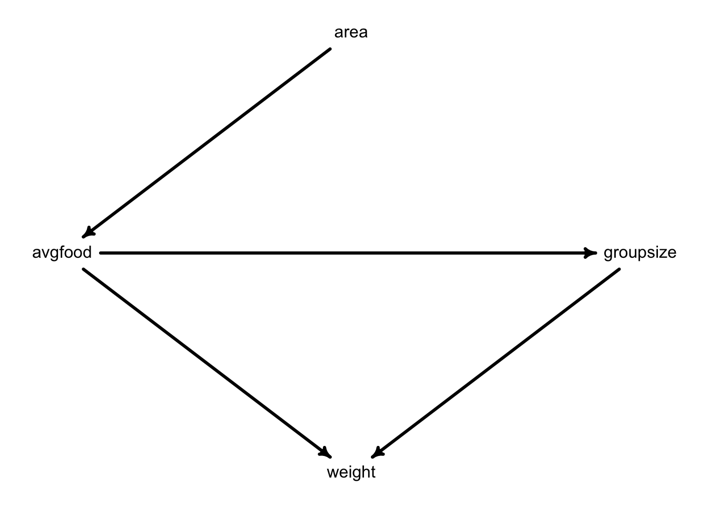
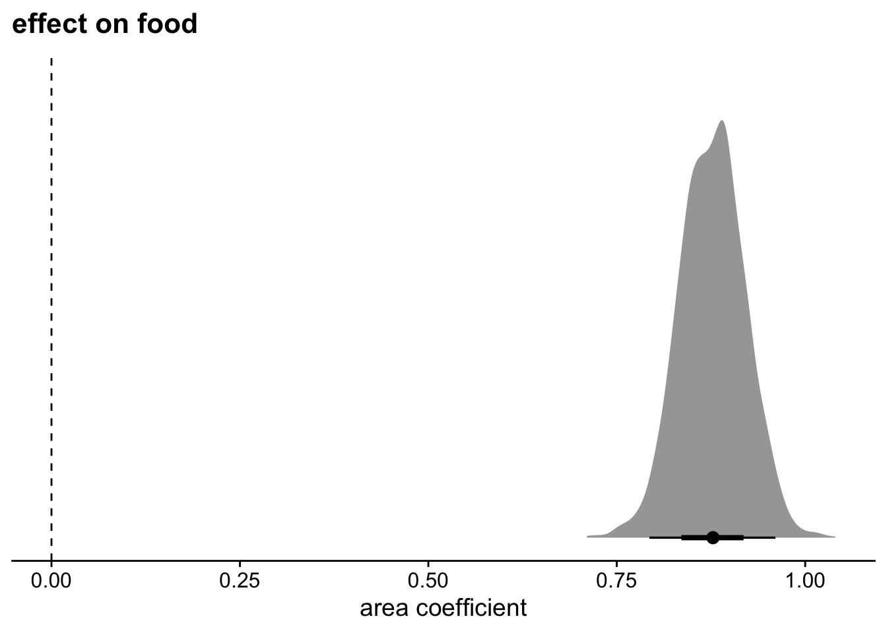
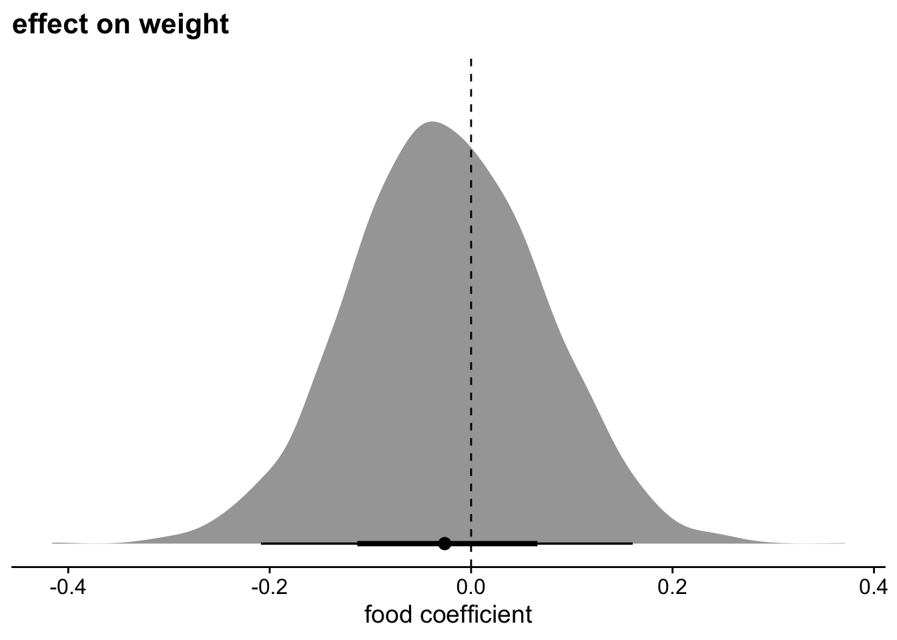
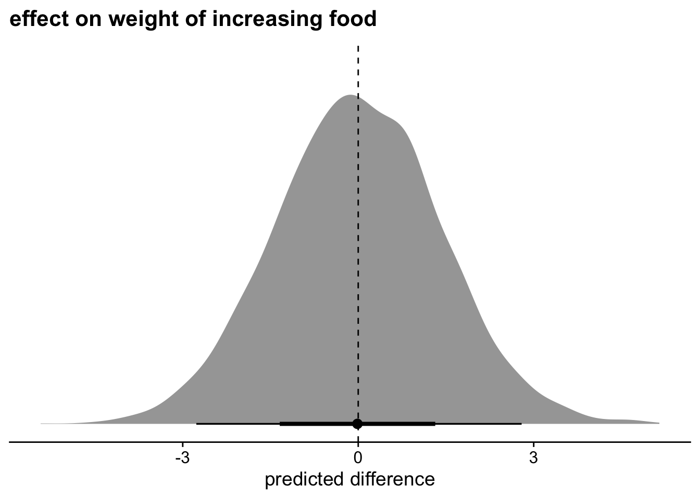
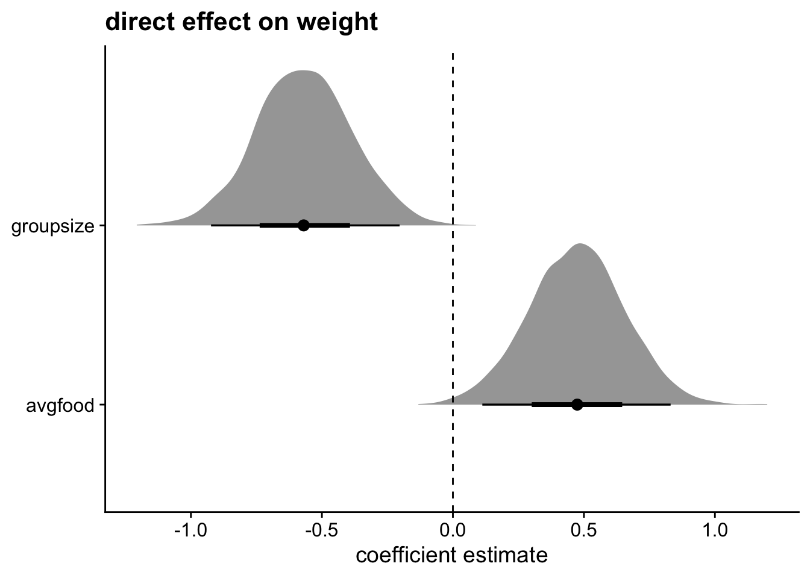

Problem set 3
Due by 11:59 PM on Monday, April 21, 2025
Instructions
Please use an RMarkdown file to complete this assignment. Make sure you reserve code chunks for code and write out any interpretations or explainations outside of code chunks. Submit the knitted PDF file containing your code and written answers on Canvas.
Questions
The following problems are based on the dataset foxes in the rethinking package. There are 116 foxes in 30 different urban groups living in England. Group sizes (groupsize) range from 2 to 8 individuals. Each group maintains its own urban territory. (Fox groups = street gangs.) Some territories are larger than others (area). Some territories have more food (avgfood) than others. We want to model the weight of each fox.
- Use the backdoor criterion and estimate the total causal influence of
areaonavgfood.What effect would increasing the area of a territory have on the amount of food inside it?
Click to see the answer
Because there are no backdoor paths from area to food, we don’t need to add any additional variables to our model.
library(brms)Loading required package: RcppLoading 'brms' package (version 2.22.0). Useful instructions
can be found by typing help('brms'). A more detailed introduction
to the package is available through vignette('brms_overview').
Attaching package: 'brms'The following object is masked from 'package:stats':
arlibrary(tidybayes)
Attaching package: 'tidybayes'The following objects are masked from 'package:brms':
dstudent_t, pstudent_t, qstudent_t, rstudent_tlibrary(tidyverse)── Attaching core tidyverse packages ──────────────────────── tidyverse 2.0.0 ──
✔ dplyr 1.1.4 ✔ readr 2.1.5
✔ forcats 1.0.0 ✔ stringr 1.5.1
✔ ggplot2 3.5.1 ✔ tibble 3.2.1
✔ lubridate 1.9.3 ✔ tidyr 1.3.1
✔ purrr 1.0.2 ── Conflicts ────────────────────────────────────────── tidyverse_conflicts() ──
✖ dplyr::filter() masks stats::filter()
✖ dplyr::lag() masks stats::lag()
ℹ Use the conflicted package (<http://conflicted.r-lib.org/>) to force all conflicts to become errorslibrary(here)here() starts at /Users/sweston2/Library/CloudStorage/GoogleDrive-weston.sara@gmail.com/My Drive/Work (google drive)/teaching/uobayeslibrary(cowplot)
Attaching package: 'cowplot'
The following object is masked from 'package:lubridate':
stampdata(foxes, package="rethinking") #
d <- foxes
d = d %>%
mutate(
across(c(weight, area, avgfood, groupsize),
rethinking::standardize,
.names="z{.col}")
)
m1 <- brm(
data=d,
family=gaussian,
zavgfood ~ 1 + zarea, # the 1 isn't necessary, but it can help to be explicit
prior = c( prior(normal(0, .2), class=Intercept),
prior(normal(0, .5), class=b),
prior(exponential(1), class=sigma)),
iter=5000, warmup=1000, seed=9, chains=1,
file=here("files/models/hw3.1")
)
posterior_summary(m1) Estimate Est.Error Q2.5 Q97.5
b_Intercept -1.787205e-04 0.04232039 -0.0838172 0.08238894
b_zarea 8.770416e-01 0.04351424 0.7933333 0.96055366
sigma 4.755545e-01 0.03218740 0.4185124 0.54327122
Intercept -1.787205e-04 0.04232039 -0.0838172 0.08238894
lprior -1.575419e+00 0.15959423 -1.9002485 -1.28224394
lp__ -8.011294e+01 1.23163672 -83.4136233 -78.71506088as_draws_df(m1) %>%
ggplot( aes(x=b_zarea) ) +
stat_halfeye() +
geom_vline( aes(xintercept=0), linetype="dashed" ) +
labs( x="area coefficient",
title="effect on food") +
scale_y_continuous( NULL, breaks=NULL) +
theme_cowplot()
Territory size has a large impact on food. These are standardized estimates, so I can interpret the coefficients similar to a correlation. An effect of .88 is very large.
- Now infer the total causal impact of adding food to a territory on
weight.Can you calculate a causal effect by simulating an intervention on food?
Click to see the answer
Again, there are no backdoor paths to close.
m2 <- brm(
data=d,
family=gaussian,
zweight ~ 1 + zavgfood,
prior = c( prior(normal(0, .2), class=Intercept),
prior(normal(0, .5), class=b),
prior(exponential(1), class=sigma)),
iter=5000, warmup=1000, seed=9, chains=1,
file=here("files/models/hw3.2")
)
posterior_summary(m2) Estimate Est.Error Q2.5 Q97.5
b_Intercept 2.419619e-03 0.08570397 -0.1605716 0.1727472
b_zavgfood -2.445427e-02 0.09455113 -0.2086561 0.1604316
sigma 1.009087e+00 0.06707915 0.8887629 1.1466294
Intercept 2.419619e-03 0.08570397 -0.1605716 0.1727472
lprior -6.553151e-01 0.15964801 -1.0596240 -0.4581927
lp__ -1.661419e+02 1.28473002 -169.4740028 -164.7155693as_draws_df(m2) %>%
ggplot( aes(x=b_zavgfood) ) +
stat_halfeye() +
geom_vline( aes(xintercept=0), linetype="dashed" ) +
labs( x="food coefficient",
title="effect on weight") +
scale_y_continuous( NULL, breaks=NULL) +
theme_cowplot()
There doesn’t seem to be an effect of food on weight. Strange!
Let’s simulate the intervention to be sure.
F0 = predicted_draws( object=m2, newdata=data.frame(zavgfood=0) ) %>%
select(zavgfood, .draw, .prediction)Adding missing grouping variables: `.row`F1 = predicted_draws( object=m2, newdata=data.frame(zavgfood=1) ) %>%
select(zavgfood, .draw, .prediction)Adding missing grouping variables: `.row`full_join(F0, F1) %>%
pivot_wider( names_from = zavgfood,
names_prefix = "F",
values_from = .prediction) %>%
mutate(diff = F1-F0) %>%
ggplot( aes(x=diff) ) +
stat_halfeye() +
geom_vline( aes(xintercept=0), linetype="dashed" ) +
labs( x="predicted difference",
title="effect on weight of increasing food") +
scale_y_continuous( NULL, breaks=NULL) +
theme_cowplot()Joining with `by = join_by(.row, zavgfood, .draw, .prediction)`
Yep, definitely nothing going on here.
- Now infer the direct causal impact of group size on
weight.
Click to see the answer
A minimal sufficient adjustment is to control for average food. You can also control for area if you want – it won’t affect the estimates.
m3 <- brm(
data=d,
family=gaussian,
zweight ~ 1 + zavgfood + zgroupsize,
prior = c( prior(normal(0, .2), class=Intercept),
prior(normal(0, .5), class=b),
prior(exponential(1), class=sigma)),
iter=5000, warmup=1000, seed=9, chains=1,
file=here("files/models/hw3.3")
)
posterior_summary(m3) Estimate Est.Error Q2.5 Q97.5
b_Intercept -3.242852e-03 0.07882886 -0.1568576 0.1475536
b_zavgfood 4.733933e-01 0.18289019 0.1122530 0.8309168
b_zgroupsize -5.675697e-01 0.18288232 -0.9231742 -0.2034564
sigma 9.603875e-01 0.06186165 0.8464977 1.0904399
Intercept -3.242852e-03 0.07882886 -0.1568576 0.1475536
lprior -2.025487e+00 0.76926517 -3.8605025 -0.9146187
lp__ -1.619678e+02 1.34979695 -165.3045325 -160.2426179as_draws_df(m3) %>%
select( starts_with("b_z") ) %>%
pivot_longer( everything(),
names_prefix = "b_z" ) %>%
ggplot( aes(x=value, y=name) ) +
stat_halfeye() +
geom_vline( aes(xintercept=0), linetype="dashed" ) +
labs( x="coefficient estimate",
y=NULL,
title="direct effect on weight") +
theme_cowplot()Warning: Dropping 'draws_df' class as required metadata was removed.
Both of these are direct effects, so let’s include them in the same graph. As there is more food, the foxes are bigger. Checks out. But as group size gets larger, weight gets smaller stratifying by food. These effects are also roughly the same size, thus canceling each other out. That’s why we didn’t see a direct effect of food on weight.
- Given all of these models, what do you think is going on with the foxes?
Click to see the answer
Larger territories increase food, but food both increases weight and increases group size. In simple terms, the benefits of more food are canceled out by more foxes being attracted to the food, so each fox gets the same amount.